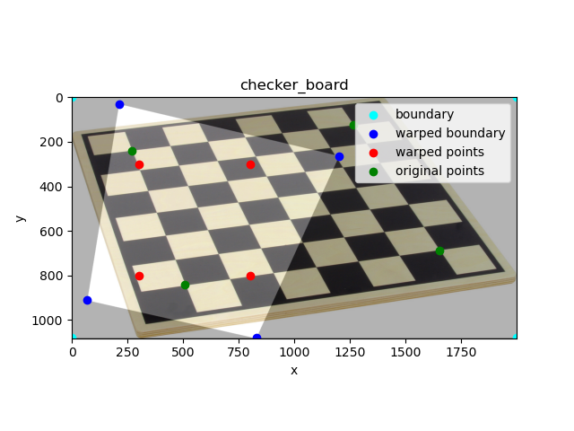
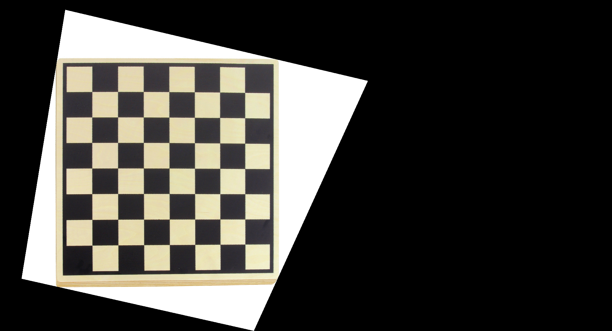
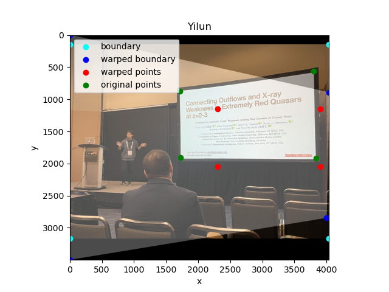
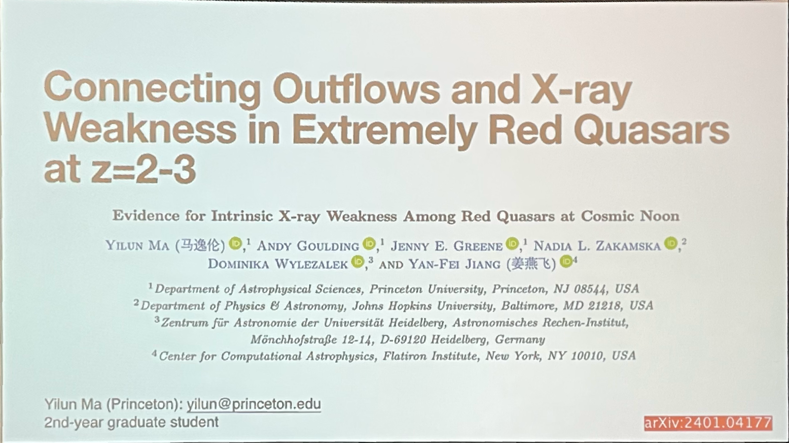
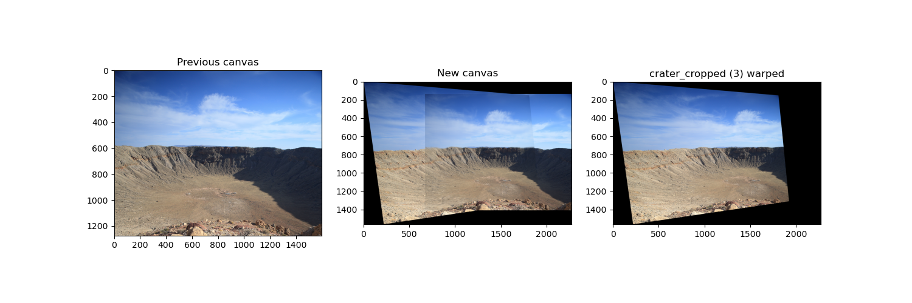
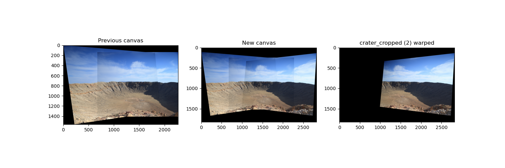
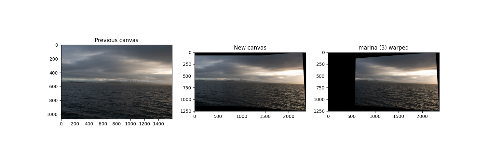
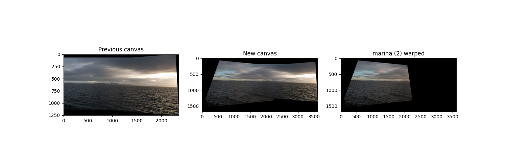
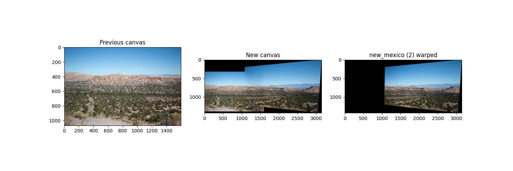

In this project, most of the images are taken from a iPhone 13 Pro.
Some of the images are taken with a digital camera.
Here are some examples of the images used in this project.
Shout out to my partner Yilun for
providing
the amazing photo at Meteor Crater, Arizona.
Go check out his other amazing photos!
Recover Homographies
How It Works
Similar to Project 3, we need to find the best warp
between two images.
The goal is to find $$\mathbf{H} = \begin{bmatrix}a & b & c \\ d & e & f \\ g & h & 1\end{bmatrix}$$
such that $$\mathbf{H} = \mathrm{arg} \min_\mathbf{H} \sum_{(\mathbf{x}, \mathbf{x'}) \in
\mathcal{D}} \Vert \mathbf{Hx} -
\mathbf{x'}\Vert_2^2$$
where $\mathbf{x} = \begin{bmatrix}x & y & 1\end{bmatrix}^T$ and $\mathbf{x'} = \begin{bmatrix}wx' &
wy' & w\end{bmatrix}^T$.
Here, $\begin{bmatrix} x & y \end{bmatrix}$ and $\begin{bmatrix} x' & y' \end{bmatrix}$ are the
coordinates of the feature points in the source and destination images.
$w$ is the scaling factor.
$\mathcal{D}$ denotes the set of pairs of feature points in the two images.
We can rewrite this into a least squares problem on the parameters in $\mathbf{H}$.
For each pair of feature point $\mathbf{x}_i$ and $\mathbf{x}_i'$,
$$\underbrace{\begin{bmatrix} x_i & y_i & 1 & 0 & 0 & 0 & -x_i x_i' & -y_i x_i' \\ 0 & 0 & 0 & x_i &
y_i
& 1 & -x_i y_i' & -y_i y_i'\end{bmatrix}}_{P_i}
\begin{bmatrix}a \\ b \\ c \\ d \\ e \\ f \\ g \\ h\end{bmatrix} = \underbrace{\begin{bmatrix}x_i'
\\
y_i'\end{bmatrix}}_{v_i}$$
Stack $P_i$'s and $v_i$'s vertically, and we get a classical least squares problem, whose solution
is
given by $(P^T P)^{-1} P^T v$.
Defining correspondences
Much like Project 3, we need to manually label the key features of the images before we can find the
homography.
Note that the images are labeled pairwise, so the features selected in each pair can be different,
even though they are taken from the same scene.
This is a laborious process, especially if the image chain is long.
As an example, below are the manually selected feature pairs of the Meteor Crater photos, with
feature points marked as red dots.
Image Rectification
One straightforward way to test the algorithm is image rectification.
Below is an image of a checkerboard and the location of the vertices of the middle 6x6 squares
(annotated with green points).
We want to warp the image such that the vertices form a perfect square.
The desired location of the annotated points in the warped image are marked in red points.
The estimated region after the warp is highlighted with its vertices marked in
blue points.

Annotated checker board and estimated warp result.
And here is the result of actually warping the entire image.

Warped checker board. Note the canvas was enlarged just
enough to keep both the original and warped image. This will be useful in blending images after
warping.
Below is another example.
Yilun giving a talk.

Annotation and the desired warp.
Warped image.

Closer look of Yilun's slides after rectification. Super cool work!
Blending the Images into a Mosaic
With the feature points from manual annotation, we can recover the homography between two images
and recursively blend them into a growing mosaic.
Note that the homography can be accumulated, and therefore warping from image $A \rightarrow C$
can be achieved by the composition of $A \rightarrow B$ then $B \rightarrow C$.
Utilizing this fact, we first label each pair of adjacent images and get the estimated
homography matrix.
Then, we warp all images towards the center image.
Below are the step-by-step process of warping.
1. Meteor Crater Natural Landmark (photo by Yilun Ma)

Warping and blending the left image to the center.

Warping and blending blend the right image to the
previous result.
So far, we're just taking the average between the overlapping area, and the boundary of the
original images are very clearly visible.
To get smoother blending, we adopt Lowe's two-band blending technique, where we create a simple
two-level pyramid of the image, and use a smooth alpha channel to blend the low frequency and a
binary alpha channel for the high-frequency.
Below is the comparison between the results.
With two-band blending, the edges are gone, and the details of the center image are sharper.
However, this blending technique still left a faint shadow in the corners, which is discernible
if the color is monotonous and the exposure between photos are different.
Average mixture.
Two-band blending.
More results
2. San Francisco from Berkeley Marina on a Cloudy Day
Original Images
Annotating and Pre-warping
Remember that the middle image, marina (2), is the reference and therefore doesn't warp!
Warping and Blending

Warping and blending the right image to the center.

Warping and blending the left image to the previous result.
Final Result
Interesting fact: This set of images turned out very hard for the automatic
stitching algorithm.
One possible reason is that there are very few significant features in the majority of the
image.
Plus, the water and the sky are not entirely stationary!
This only worked by putting most of the feature points on the buildings, which seems
insignificant in the sense of corners.
3. Petroglyph National Monument, New Mexico
Original Images
Annotating and Pre-warping
Warping and Blending

Final Result
Spoiler: Note that there is very little overlap between the two images, so the
error in the annotation has a much more significant impact on the result.
In the later section, we'll see the automatic stitching does a much more precise job than I did.
Automatic Image Stitching
Instead of manually labeling the images, we seek ways to automatically find interesting features
and find correspondences among them.
The second part of the project is about the algorithm to achieve this.
.png)
.png)
.png)
.jpg)
.jpg)
.jpg)
.jpg)
.jpg)
.jpg)
.jpg)
.jpg)
_crater_cropped%20(2)_manually_annotated.png)
_crater_cropped%20(3)_manually_annotated.png)


.jpg)
.jpg)
.jpg)
_annotated.png)
_annotated.png)

_annotated.png)